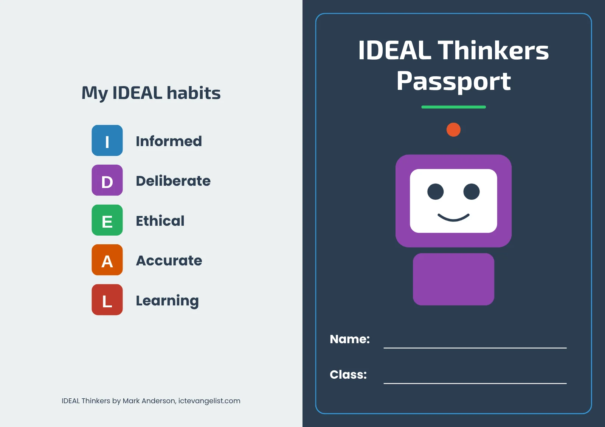
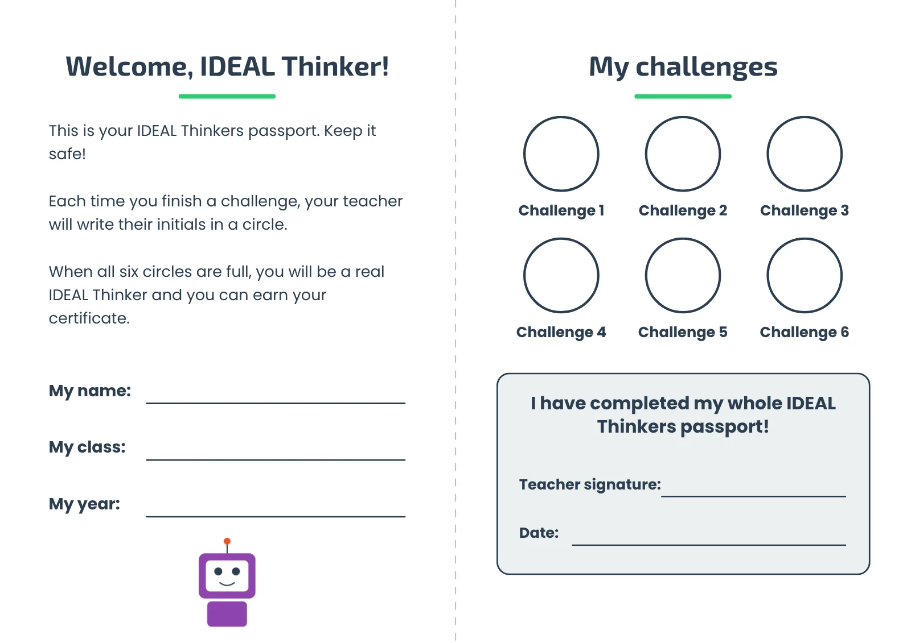
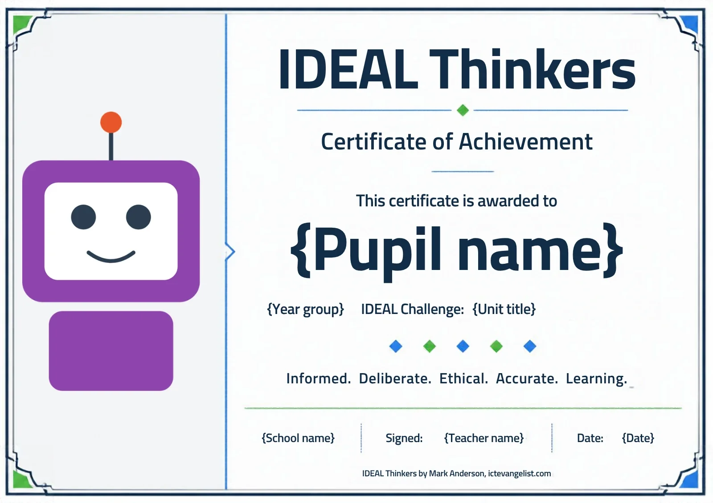

Celebrating success
Celebrating success
A passport for every pupil, and a certificate when they've finished the year's unit.
Every pupil gets an IDEAL Thinkers passport for the year. Each time they complete a lesson, you write your initials in one of the six circles, and when all six are full, they've completed the year's unit and earned their IDEAL Thinkers certificate.
It works however your school timetables the unit. You might teach the six lessons as one half-term block, or spread them across the year; either way, a circle is filled each time a lesson is done. Each new school year, every pupil starts a fresh passport.
The passport


The passport is one A4 sheet, printed on both sides and folded into an A5 booklet. The front cover has space for the pupil's name and class, and the back shows the five IDEAL habits. Inside, there's a welcome page, six challenge circles for your initials, and a box to sign and date when the passport is complete.
If you'd like to add your school's logo or change the wording, use the Canva copy.
Printing the passport
- Print on A4, double-sided, choosing "flip on short edge".
- Fold in half so the front cover, with the robot, is on the outside.
- One passport per pupil.
The certificate

When a pupil's passport is full, they earn their certificate. You don't need to type thirty certificates by hand: Canva's Bulk Create fills them in for the whole class at once, from a class list in a Canva Sheet. Canva for Education is free for teachers in UK state schools.
Make a copy of the certificateMake a copy of the class list
How to make a class set of certificates
If you haven't used Bulk Create before, these steps take you through it from start to finish. Canva occasionally renames its menus, so if a name here doesn't quite match what you see, look for the nearest one.
- Open the class list link and choose to use the template, so you have your own copy.
- Fill in one row per pupil. The columns are Pupil name, Year group, Unit title, School name, Teacher name and Date. Don't rename the column headings.
- Year group, Unit title, School name, Teacher name and Date are usually the same for the whole class, so fill in the first row and copy it down.
- Open the certificate link and use the template, so you have your own copy of the certificate.
- Back in your class list, select the rows you've filled in, including the heading row, then choose Bulk Create from the actions menu and pick your copy of the certificate.
- Connect each text box on the certificate to its matching column: {Pupil name} to Pupil name, {Year group} to Year group, and so on for all six.
- Before generating, preview the first certificate. Because the year group and unit title are the same on every certificate in a class, adjusting the spacing on the "IDEAL Challenge" line once fixes the whole set. Also check the certificate for the pupil with the longest name, so it doesn't wrap or run off the edge.
- Generate the certificates, then download them as a PDF to print.
Unit titles for the class list
Type the unit title exactly as it appears here. The certificate already says "IDEAL Challenge:", so type only the unit title.
| Year group | Unit title |
|---|---|
| Year 1 | Machines That Guess |
| Year 2 | Using AI Wisely |
| Year 3 | AI in Everyday Life |
| Year 4 | Machines That Talk |
| Year 5 | Data, Training and Fairness |
| Year 6 | AI, Society and the Future |
Pupil data
Use your school's approved Canva account and follow your school's data protection policy. Enter only first names and surnames, and delete the class list once the certificates are printed.